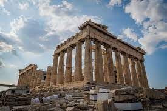

About
This web site is talking about one of the common darily product, Cheese.
History
Cheese is an ancient food whose predare recroded history.
As early as 8000 BCE, the earliest Neolithic farmers living in the fertile crescent begaan a legacy of cheesemaking.
When agriculture rise to domesticeated sheep and goat where harvasted by ancient farmers for their milk.
when this milk are keft in warm conditions for several hours, the milk began to sour, the lactic acids caused proteins to coagulate,binding into soft edible clumps or curds.
This beacame the building blocks of cheese.
Cheese vs milk
milk provide protein, clacium, and fat however milk contains lactose which is not siotable for lactose
intolerant people. Since lactose is the liquid part of the milk, cheese however is a solid
which is why it contain less lactose so fo lactose intolerant people, enjoying cheese
is a possibility though they cannot enjoy milk.
Fun Fact
 Egypt -
Egypt -
Egyptians enjoyed goats's milk cottage cheese, straining the whey with reed mats.
South Asia -
in South Asia, milk was coagulated with a variety of food acids, such as lemon juice, vinegar, or yougurt and then hung to dry into loafs of paneer. This solf mild cheese could be added to curry and sauces, or simply fired as a quick vegetarian dish.
 Greece -
The Greeks produced bricks of salty brined feta cheese alongside a harder variety sinilar to today's pecorino romano.This grating cheese was produced in Sicily and used in dishes all across the mediterranean